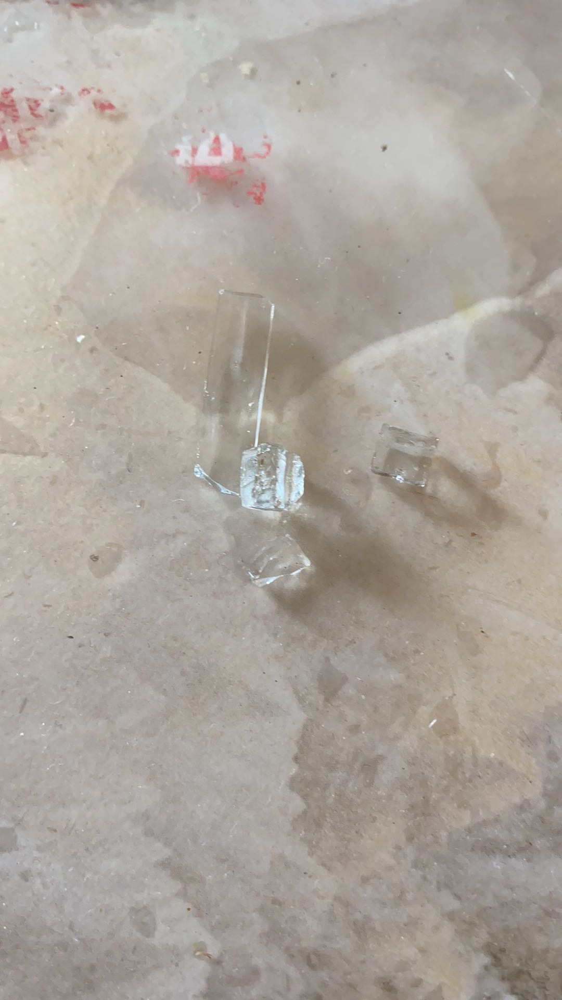
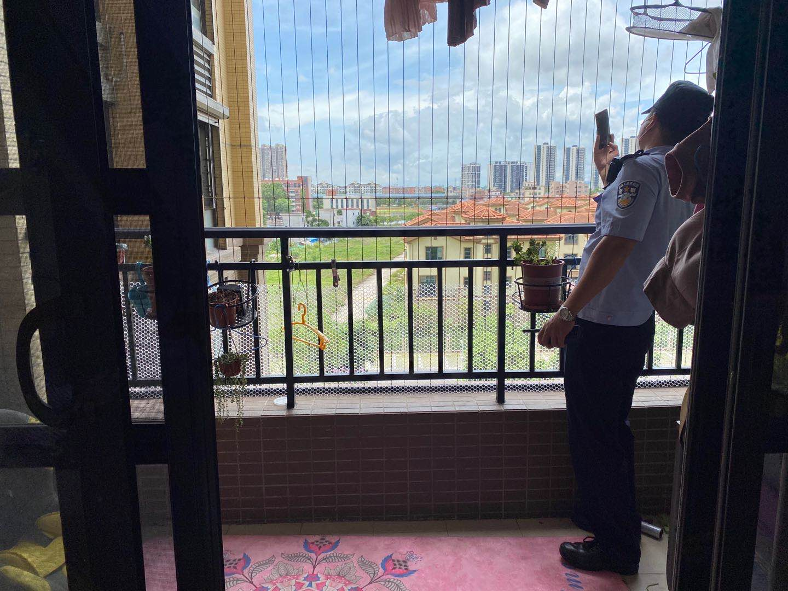
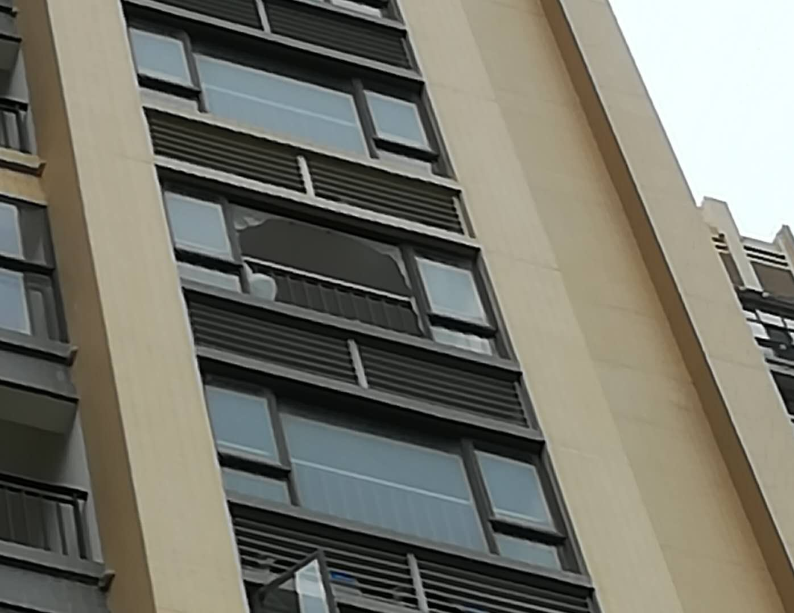
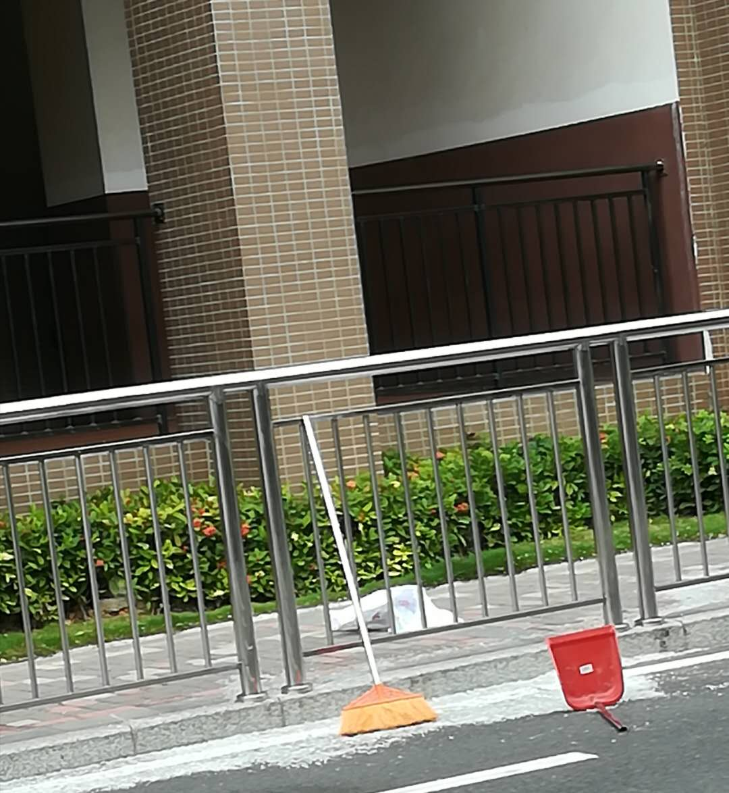
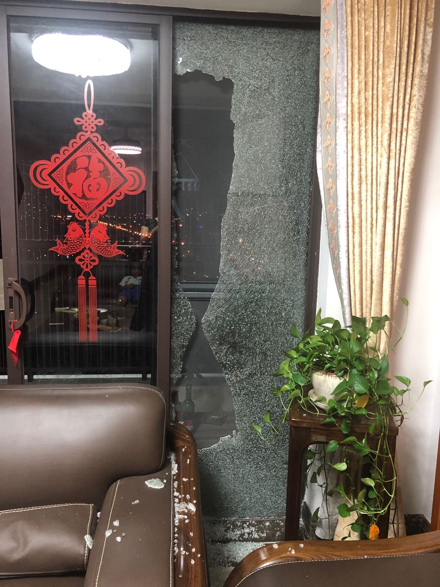
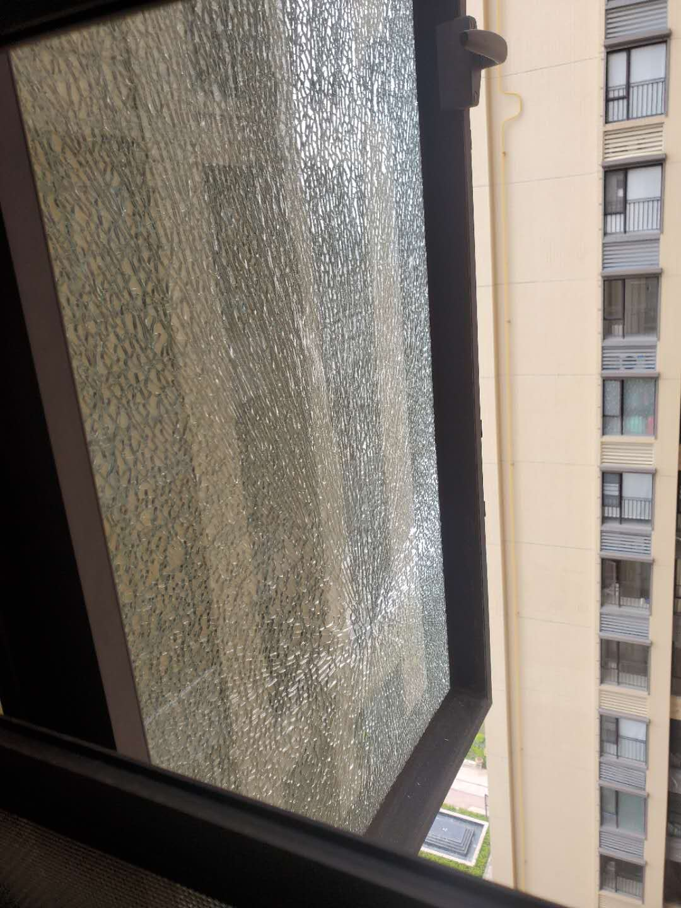
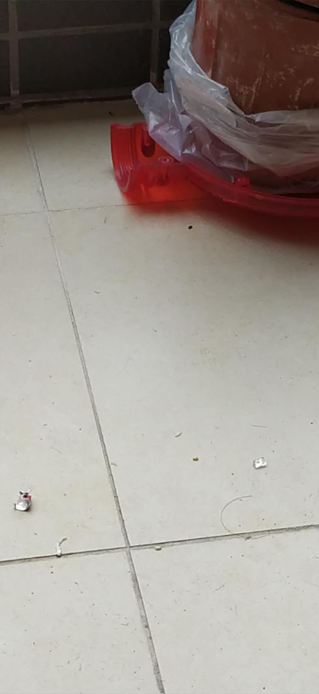
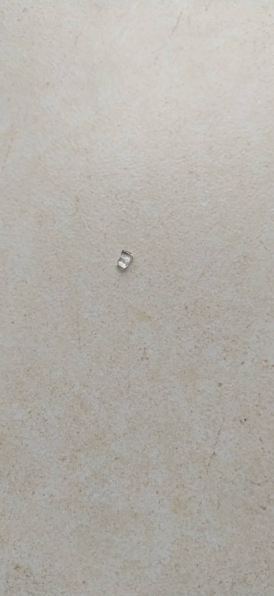
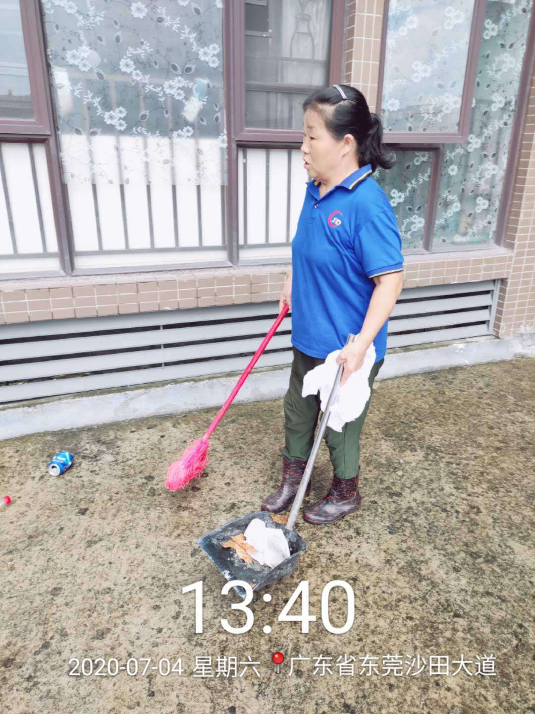
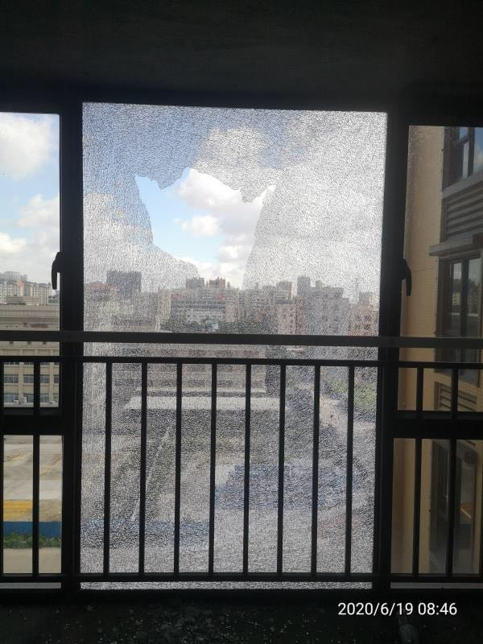

沙田信鸿蔚蓝海岸小区业主关于玻璃自爆问题的抗议书
沙田信鸿蔚蓝海岸小区自2019年交楼以来，玻璃自爆并从高空坠落的事故发生多起，现列举部分事故如下：
- 2020年7月2日，6栋19楼某户，发生玻璃自爆并从高空坠落事故，玻璃碎片掉落到多家业主阳台，并砸中在楼下溜娃的某奶奶


- 2020年3月8日，1栋7楼某户，发生玻璃自爆并从高空坠落事故，玻璃碎片掉落到小区唯一的人行入口通道


- 2020年7月3日，3栋2101，发生玻璃自爆事故

- 2020年4月18日，6栋1901，发生玻璃自爆事故

- 2019年7月20日，6栋30楼某户，发生玻璃自爆事故


- 2020年1月2日，6栋7楼某户，发生玻璃自爆事故

- 2020年6月19日，4栋802，发生玻璃自爆事故

- 2020年3月11日，5栋3101，发生玻璃自爆事故
- 2019年11月28日，6栋1001，发生玻璃自爆事故
- 2020年5月10日，3栋3001，发生玻璃自爆事故

- 2020年x月x日，3栋2405，发生玻璃自爆事故
- 2020年x月x日，5栋2楼某户，发生玻璃自爆事故
- 2020年x月x日，1栋10楼某户，发生玻璃自爆事故
- 2020年x月x日，3栋1405，发生玻璃自爆事故
- 2020年x月x日，3栋402，发生玻璃自爆事故
- 2020年x月x日，4栋2702，发生玻璃自爆事故
- 2020年x月x日，4栋3103，发生玻璃自爆事故
- 2020年x月x日，6栋1603，发生玻璃自爆事故
- 2020年x月x日，6栋3001，发生玻璃自爆事故
玻璃自爆并从高空坠落，无异于不定时炸弹，令人惶惶不可终日，尤其对于家有小孩的业主更是如此，小孩子好动，大多数时间在楼下成群结队玩耍。
如此高的玻璃自爆率、如此危险的高空坠物事故，已经严重危害了全体业主以及物业工作人员的生命安全，我们身为小区业主，在此向物业和开发商提出严正抗议，并提出以下要求：
- 彻查小区玻璃质量问题
- 更换小区玻璃并做好防护工作
- 小区西门人行入口搭建防护棚
- 对于仍旧自爆的玻璃，物业及开发商负责免费替换，并承担由自爆导致的一切后果
请在收到此抗议书一周以内(截至______年___月___日)给予回复，否则，小区业主将采取以下（包括但不仅限于）行动维权
- 在小区大门口、阳台、窗户拉横幅抗议
- 向网络、报纸等媒体反馈
- 向政府部门反馈
- 集体停缴物业管理费并考虑更换物业
- 向市场质量监督局投诉小区开发商以及玻璃生产厂商的质量问题
在家人安危面前，我们的决心是坚不可摧的。
习近平总书记说：要把人民群众生命安全和身体健康放在第一位
。
我们期待物业和开发商给全体业主一个满意的答复。